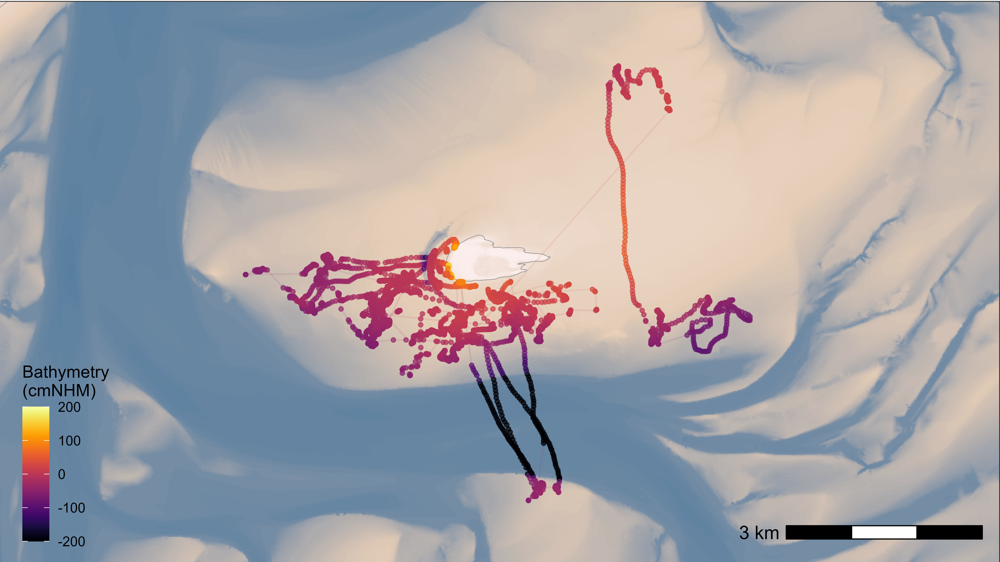

Add tidal and bathymetry data
Johannes Krietsch
Source:vignettes/extended_workflow/add_tidal_and_bathymetry_data.Rmd
add_tidal_and_bathymetry_data.RmdThis article shows how to add tidal and bathymetry data to WATLAS data and provides an example of how to subset by specific times witin the tide and plot the data with bathymetry.
Load packages and movement data
library(tools4watlas)
library(terra)
library(ggplot2)
# Path to csv with raw data
data_path <- system.file(
"extdata", "watlas_data_aggregated.csv",
package = "tools4watlas"
)
# Load data
data <- fread(data_path, yaml = TRUE)Add tidal data
Tide data are from West-Terschelling and prepared by Allert. They are
located in the “WATLAS” SharePoint folder: Documents/data/.
Either specify the path to your local copy of this folder or add the
path for your user in the atl_file_path() function.
The offset of 30 minutes is set to match Griend.
# file path to WATLAS teams data folder
fp <- atl_file_path("watlas_teams")
# sub path to tide data
tidal_pattern_fp <- paste0(
fp, "waterdata/allYears-tidalPattern-west_terschelling-UTC.csv"
)
measured_water_height_fp <- paste0(
fp, "waterdata/allYears-gemeten_waterhoogte-west_terschelling-clean-UTC.csv"
)
# load tide data
tidal_pattern <- fread(tidal_pattern_fp)
measured_water_height <- fread(measured_water_height_fp)
# add tide data to movement data
data <- atl_add_tidal_data(
data = data,
tide_data = tidal_pattern,
tide_data_highres = measured_water_height,
waterdata_resolution = "10 minute",
offset = 30
)
# Show first 5 rows (subset of columns to show additional ones)
head(data[, .(tag, datetime, tideID, tidaltime, time2lowtide,
waterlevel)]) |>
knitr::kable(digits = 2)| tag | datetime | tideID | tidaltime | time2lowtide | waterlevel |
|---|---|---|---|---|---|
| 3027 | 2023-09-23 03:13:00 | 2023513 | 133 | -247 | 52 |
| 3027 | 2023-09-23 03:19:00 | 2023513 | 139 | -241 | 45 |
| 3027 | 2023-09-23 03:20:00 | 2023513 | 140 | -240 | 45 |
| 3027 | 2023-09-23 03:21:00 | 2023513 | 141 | -239 | 45 |
| 3027 | 2023-09-23 03:24:00 | 2023513 | 144 | -236 | 45 |
| 3027 | 2023-09-23 03:25:00 | 2023513 | 145 | -235 | 39 |
Add bathymetry data
A short example of how to add bathymetry data to WATLAS data.
Bathymetry data can be found in the “Birds, fish ’n chips” SharePoint
folder: Documents/data/GIS/rasters/. To run the script set
the file path (fp) to the local copy of the folder on your
computer. The data can also be downloaded from the Waddenregister.
Extract bathymetry data for each location and coarsely classify time in the tide cycle.
# file path to Birds, fish 'n chips GIS/rasters folder
fp <- atl_file_path("rasters")
# load bathymetry data
bat <- rast(paste0(fp, "bathymetry/2024/bodemhoogte_20mtr_UTM31_int.tif"))
# add bathymetry data
data <- atl_add_raster_data(
data, raster_data = bat, new_name = "bathymetry", change_unit = 100 # m to cm
)
# Show first 5 rows (subset of columns to show additional ones)
head(data[, .(tag, datetime, bathymetry)]) |>
knitr::kable(digits = 2)| tag | datetime | bathymetry |
|---|---|---|
| 3027 | 2023-09-23 03:13:00 | 84.29 |
| 3027 | 2023-09-23 03:19:00 | 86.83 |
| 3027 | 2023-09-23 03:20:00 | 86.83 |
| 3027 | 2023-09-23 03:21:00 | 84.29 |
| 3027 | 2023-09-23 03:24:00 | 121.75 |
| 3027 | 2023-09-23 03:25:00 | 84.29 |
Example: Filter data with by tide and plot with bathymetry data
Filter data with specific times within the tide cycle
To select localizations when mudlfats are available for foraging, we can for example select a low tide period from -2.5 hours to +2.5 hours around low tide (Bijleveld et al. 2016):
# Select the low tide period for a particular tide as specified by tideID
data_subset <- atl_filter_covariates(
data = data,
filters = c(
"tideID %in% c(2023513, 2023514)",
"between(time2lowtide, -2.5 * 60, 2.5 * 60)"
)
)## Note: 51.24% of the dataset was filtered out, corresponding to 3531 positions.Plot data movement data with bathymetry data
# additional packages
library(ggplot2)
library(viridis)
library(scales)
# file path to WATLAS teams data folder
fp <- atl_file_path("rasters")
# load bathymetry data
bat <- rast(paste0(fp, "bathymetry/2024/bodemhoogte_20mtr_UTM31_int.tif"))
# create base map with bathymetry data
bm <- atl_create_bm(
data_subset,
buffer = 1000, raster_data = bat, option = "batymetry"
)## Warning: [crop] CRS do not match
# plot data
bm +
geom_path(
data = data_subset, aes(x, y, group = tag, colour = bathymetry),
alpha = 0.1, show.legend = FALSE
) +
geom_point(
data = data_subset, aes(x, y, color = bathymetry), size = 1,
alpha = 0.7, show.legend = TRUE
) +
guides(colour = guide_colourbar(position = "inside"), fill = "none") +
scale_color_viridis(
direction = 1, option = "inferno", name = "Bathymetry\n(cmNHM)",
limits = c(-200, 200), oob = scales::squish
) +
theme(
legend.position.inside = c(0.07, 0.2),
legend.background = element_rect(fill = NA)
)